Reference
Contributor
1. Calibration의 의미
이미지 파일의 구조에 대한 글에서, 이미지는 2차원 공간상에 위치한
pixel의 집합이라고 말씀드렸습니다.대개
pixel하나당 흑백(Grayscale) 이미지의 경우 숫자 하나가, 컬러 이미지의 경우 숫자 3개가 RGBchannel의 형태로 할당되어 있습니다.그러나 이미지에 찍힌 대상의 실제 크기는
pixel과 다른,meter등의 단위로 이루어져 있습니다. 이를 보정하는 과정을calibration이라고 하며,scale을pixel단위 길이나 넓이에 곱합니다.ImageJ에서 이미지를 열고 포인터를 그림 위에 올리면, 메인 창에x,y좌표와 함께pixel값이 나옵니다.
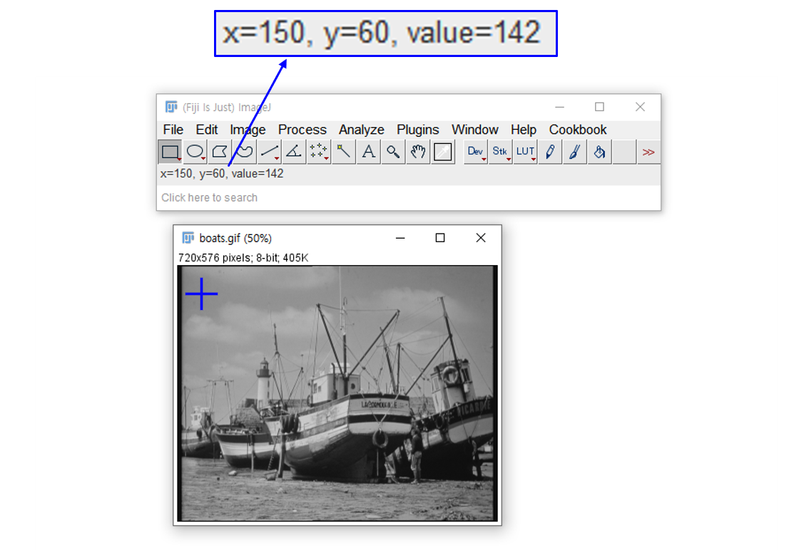- 그러나 어떤 이미지는
ImageJ메인 창의x,y좌표,pixel값에 괄호()가 붙어있습니다. - 아래 예제의 원본은 여기에서 다운로드 받을 수 있습니다.
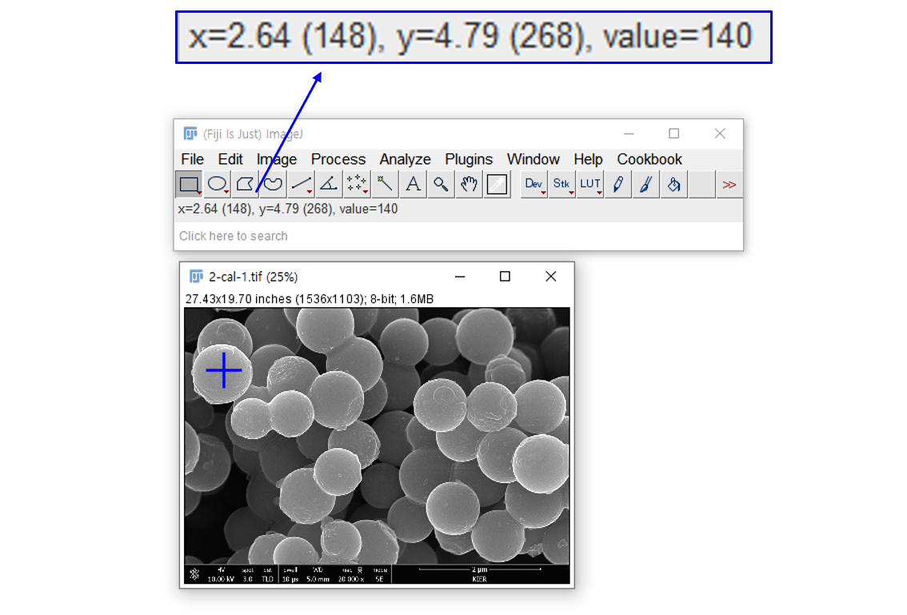 - 괄호 안의 값은
pixel단위, 괄호 밖의 값은 보정된(calibrated) 실제 길이입니다. - 이미지 우측 하단 $ 2\ \mu\text{m} $ scale bar의 길이는 484 px 입니다.
- 메타데이터로부터 얻은
scale이 4.13 nm/px이므로, 확인을 위해 곱해보면 $ 484 \times 4.13 = 1998.92\ \text{nm} $ 이므로 $ \approx 2 \mu\text{m} $ 입니다.
ImageJCalibration은 크게 두 가지로 나뉘어집니다.- Spatial Calibration :
x,y등 길이 방향을 보정합니다. - Density Calibration:
pixel값을 보정합니다.
- Spatial Calibration :
2. Calibration의 활용
Calibration이 된 이미지를 이용해 측정해봅시다.
DEM: Digital Elevation Model이라는 종류의 데이터가 있습니다.- 이미지 형식이지만
pixel에 담긴 값은 해당 위치의 고도를 의미합니다. - 제한된 값(8 bit Grayscale 이미지: 0~255) 값만으로 훨씬 넓은 범위의 고도를 파악해야 하므로
pixel값에 scale이 적용되어 있습니다.
여기에서 이미지를 다운로드받아
ImageJ에서 엽니다.Image > Lookup Tables에서Green Blue Fire를 선택합니다.흔히
LUT라고 말하는 Loopup Table은 Grayscale에 담긴 Scalar 값을 시각화할 colormap입니다.실제 값은 변경하지 않고
ImageJ에서 보여주는 시각적인 효과만 변경됩니다.Analyze > Surface Plot을 선택하고 옵션에서Draw Wireframe,Shade,Draw Axis,Smooth를 선택합니다. 2차원 그림이 3차원으로 변환됩니다. z 축 숫자를 보면 167 ~ 2408로 표시되어 있습니다.Calibration이 적용된 것입니다.Analyze > 3D Surface Plot을 선택해도 비슷한 그림을 얻을 수 있습니다. 3D 회전을 비롯해서Grid Size,Smoothing등을 실시간으로 조정할 수 있는 interactive plot입니다. 여기서는 z 축에Calibration이 적용되지 않았습니다.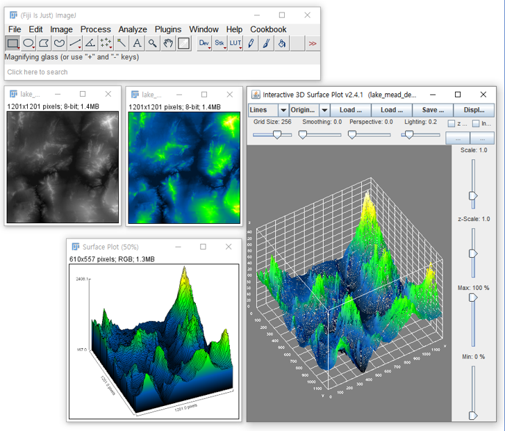
3.Calibration (GUI)
3.1. Spatial Calibration (GUI)
이미지의 Scale Bar를 이용하여 Spatial Calibration을 설정해 보겠습니다.
메인 창에서 Line Selection Tool을 선택하고 Scale Bar를 따라 선을 긋습니다. 첫 지점을 클릭하고
shift키를 누른 채 마우스를 이동하면 포인터를 수평으로만 움직일 수 있습니다.Calibration을 적용할 이미지를 여기에서 다운로드받아
ImageJ에서 열고,Analyze > Set Scale...을 선택하여 Scale 설정 창을 엽니다.조금 전 손으로 그었던 선의 길이가
Distance in pixels로 483이 나옵니다.Scale Bar에 $2\ \mu \text{m} = 2000\ \text{nm}$ 라고 되어 있으므로
Known distance에 2000을 입력하고Unit of length에 nm를 입력합니다.본 이미지에만 적용할 Calibration이므로
Global은 체크되지 않은 채로 놔둔 채OK를 누르면 Calibration이 적용됩니다.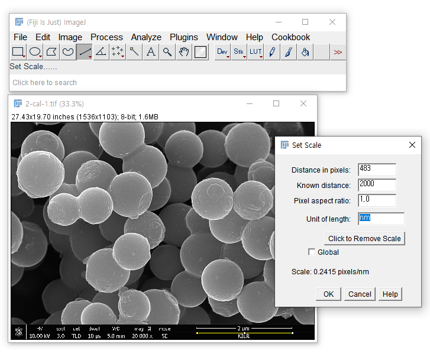
방금 설정한 Calibration을 이용하여 Particle의 지름을 측정해 보겠습니다.
지름을 잴 Particle을 정하고, Line Selection Tool을 이용해서 지름에 맞춰 선을 긋습니다.
Analyze > Set Measurements에서 측정할 항목을 선택합니다.Angle과Length는 기본으로 출력되니 추가로 얻을 값들을 선택하고, 필요 없는 값들을 선택 해제하면 됩니다.Analyze > Measure를 선택하면 Results 창이 뜨고Length = 896.401이 출력됩니다. Results 창에서File > Save as...를 선택하면.csv파일로 저장할 수 있습니다.Analyze > Plot Profile을 선택하면 Particle의 지름을 가로지르는 선을 따라 Intensity Profile을 얻을 수 있습니다.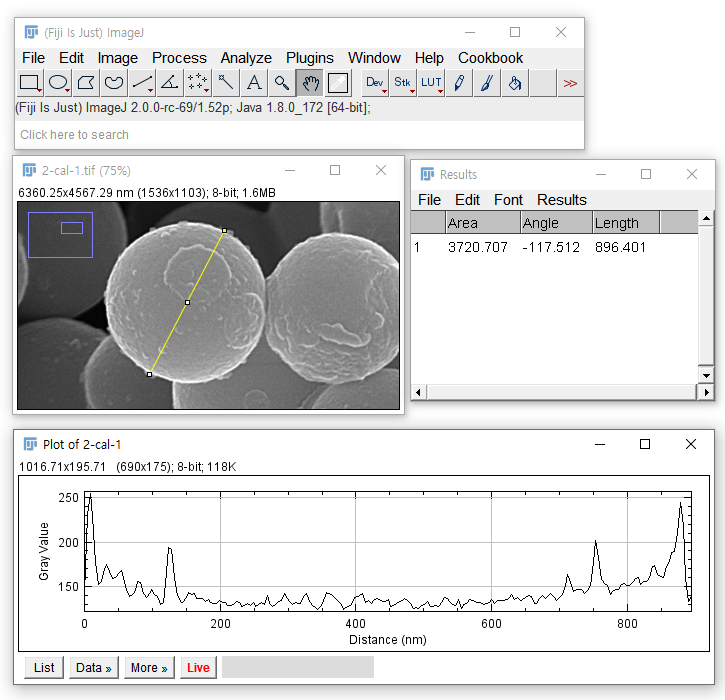
ImageJ에서 이미지에 Scale Bar를 삽입할 수 있습니다.Analyze > Tools > Scale Bar...를 선택합니다.Scale Bar창에서 Calibration 단위(nm) 기준의 길이와 Scale Bar의Height,Font Size,Location등을 설정합니다. 설정값에 따라 이미지 위에 실시간으로 Scale Bar가 생성되니 보시면서 원하는 상태로 설정하면 됩니다.$2000\ \text{nm}$ 대신 $2\ \mu \text{m}$로 출력되기를 원하시면, calibration을 $\mu \text{m}$ 단위로 진행하시면 됩니다.
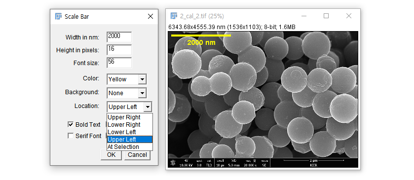
3.2. Density Calibration (GUI)
Density Calibration을 위해선 다음 두 가지 사항이 필요합니다.
- 두 지점 이상의
pixel과 데이터(value) 쌍 - Density Calibration의 함수(
function): Linear? Polynomial? Exponential?
- 두 지점 이상의
Density Calibration을 위한 데이터가 주어지면 좋지만, 그렇지 않은 경우 이미지 한켠의 범례(
legend)를 이용해서라도 입력해야 합니다.GeoTIFF이미지 데이터를 이용해서 Density Calibration을 해 보겠습니다.
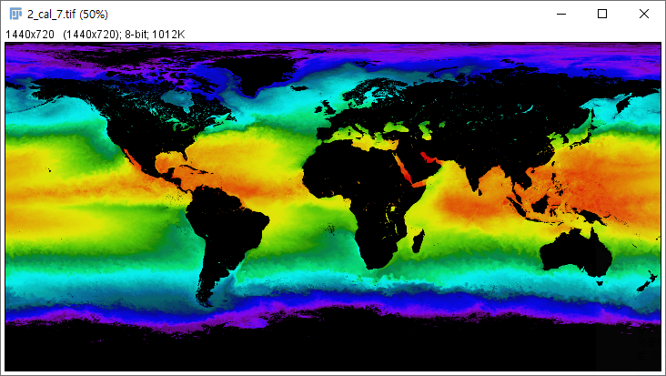GeoTIFF형식은 지리정보(GIS)와 기상 분야에 주로 사용되며, 이미지 외에도map projection,coordinate systems,ellipsoids등의 데이터를 함께 담고 있습니다.- 여기에서 예제파일을 다운받습니다.
ImageJ에서 파일을 열고,Analyze > Calibrate를 선택합니다.Calibrate창에서, 왼쪽에pixel값을 넣고 오른쪽은 이에 해당하는value를 넣어줍니다.- 왼쪽 공간에 0과 254를 넣습니다. 데이터 사이는
Enter키로 띄워줍니다. - 오른쪽 공간에 -2와 45를 넣습니다. 역시
Enter키로 분리해 줍니다. - 섭씨 온도 데이터입니다.
unit에 해당하는 곳에Degrees Celsius를 넣습니다. - 1차식 데이터이므로 Function 메뉴에서
Straight Line을 선택합니다. OK를 누르면Calibration Function이 보일 것입니다.Calibration Function을 닫고 이미지 위에 마우스를 가져가면, 메인 창에 포인터가 위치한 지점의 x, y 좌표와 함께 value가 보입니다.- 이미지를
File > Save As에서.tif형식으로 저장하면Calibration이 함께 저장됩니다.
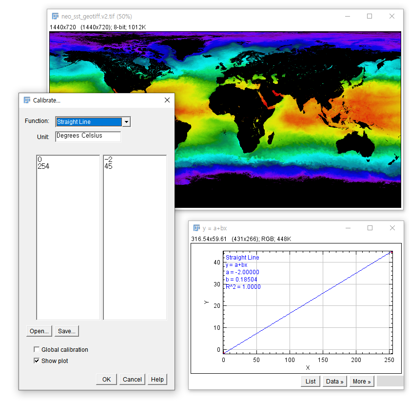
- 왼쪽 공간에 0과 254를 넣습니다. 데이터 사이는
Density Calibration을 이용해 이미지 데이터 분석을 해 보겠습니다.
Analysis > Set Measurements에서Area,Mean gray value,Standard deviation,Modal gray value,Min & Max gray value를 선택하고OK를 눌러 창을 닫습니다.Analysis > Measurement를 클릭하면 Results창이 뜹니다.- Set Measures에서 지정한 분석 결과가 담겨 있습니다.
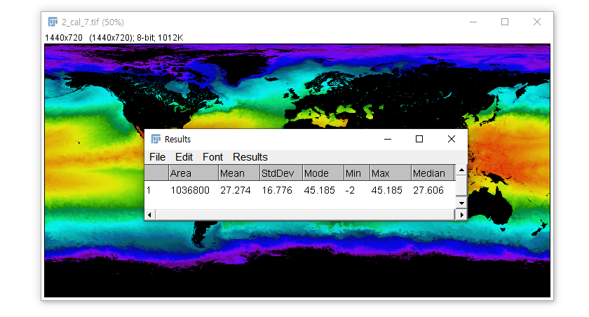
Scale Bar처럼 Density Calibration을 Legend로 삽입할 수 있습니다.
Analyze > Tools > Calibration Bar...를 선택합니다.Scale Bar와 대체로 비슷하지만
Number of Labels,Decimal Places,Zoom Factor등 다른 인자들이 있습니다.직접 인자를 바꿔가면서 Legend가 실시간으로 어떻게 변하는지 살펴보시기 바랍니다.
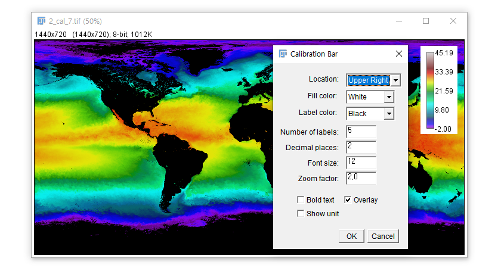
4.Calibration (python script)
4.1. Spatial Calibration (python script)
pythonscript를 이용해 현재의Calibration값을 확인하고, 새로운Calibration을 적용하겠습니다.getCalibration()으로 현재 이미지의Calibration값을 읽고,calibration().pixelWidth와calibration().pixelHeight를 수정해Calibration을 수정합니다.마지막으로
setCalibration()으로 새 이미지에 바뀐 값을 저장합니다.- 같은 이미지를
ImageJ에 띄워 놓고, script 창을 열고 아래 코드를 붙여넣고 실행합니다.
1
2
3
4
5
6
7
8
9
10
11
12
13
14
15
16
17
18
19
20
21
22
23
24from ij import IJ, ImagePlus
from ij.plugin import Duplicator
# 1. Get Open Image
imp = IJ.getImage()
# 2. Get Initial Calibration
cal = imp.getCalibration()
print 'before Calibration:', cal
# 3. Duplicate Image
imp2 = Duplicator().run(imp)
# 4. Apply New Calibration
scale = 4.13 # nm/px
cal.pixelWidth = scale # pixelWidth : Pixel width in 'unit's
cal.pixelHeight = scale # pixelHeight : Pixel height in 'unit's
cal.unit = 'nm'
print 'after Calibration:', cal
imp2.setCalibration(cal)
# 5. Show New Image
imp2.title = 'Calibrated'
imp2.show()- 실행 결과
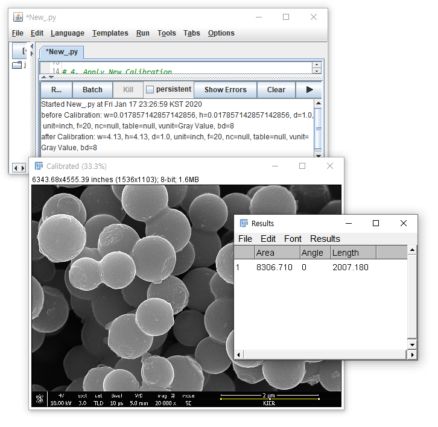
- 새 창으로 뜨는
Calibration이 적용된 이미지는 처음 이미지와 동일해 보입니다. - 그러나 Scale Bar를 따라 Line Selection Tool을 긋고
Analyze > Measure를 실행하면Length = 2007.180이라는 값이 나옵니다. Calibration을 적용하기 전 값은Length = 8.643으로, 성공적으로 적용되었음을 알 수 있습니다.- 이상적으로는
Length = 2000이 나와야 하지만, Line Selection을 할 때 손끝에서 발생한 오차로 인해 다소 크게 측정된 것입니다.
- 같은 이미지를
4.2. Density Calibration (python script)
Density Calibration 또한
pythonscript를 이용해 진행할 수 있습니다.먼저, 위 2.4.1 코드와 실행 결과를 보면 현재의
Calibration을 읽어서cal이라는 변수에 저장하고 출력한 결과가w,h,d,unit,f,nc,table,vunit,bd로 출력됩니다. 각각의 의미는 다음과 같습니다.
| 변수 이름 Variable Name |
전체 이름 Full Name |
의미 Meaning |
기본값 Default Value |
|---|---|---|---|
| w | pixelWidth | pixel width scale (unit/px) | 1.0 |
| h | pixelHeight | pixel height scale (unit/px) | 1.0 |
| d | pixelDepth | pixel depth scale (unit/px) “slice 한 장의 두께” |
1.0 |
| unit | unit | spatial unit of real world | “inch” |
| f | function | density calibration fitting function | 20 |
| nc | coefficients.length | function의 coefficient 수 (ex. y = a + bx : nc = 2) |
null |
| cTable | cTable.length | bitDepth에 대응되는 real value 수 (ex. bd = 8 : Table size = 256 by 2) |
null |
| vunit | valueUnit | density unit of real world | Gray Value |
| bd | bitDepth | data depth. 2^bd. (ex. 256 = 2^8 : bd = 8) |
8 |
공식문서에서 이 부분에 대한 설명이 매우 불친절합니다.
자세한 설명은 소스코드를 열어 이해할 수 밖에 없었습니다. 상세한 설명이 있다면 제보바랍니다.
[ 관련 공식문서 링크 ] Calibration, CurveFitter, Constant Field Values
위에서 4개의 인자(
w,h,d,unit)는 Spatial Calibration에 연관된 것이고,
아래 5개의 인자(f,nc,cTable,vunit,bd)는 Density Calibration에 연관된 것입니다.bd=8이라면 0~255까지 256개의 값에 대응되는 value를 cTable로 입력해야 하기 때문에 Density Calibration을 python script로 수행하기엔 좀 성가십니다.따라서, Density Calibration을 python script로 수행할 때는 ImageJ > Tutorial > 5. Python Script 작성에 있는
IJ.run()을 사용하시는 것을 추천합니다.- 2.3.2의 Density Calibration 과정을
IJ.run()으로 옮기면 다음과 같이 한 줄로 표현됩니다.
1
IJ.run(imp, "Calibrate...", "function=[Straight Line] unit=[Degrees Celsius] text1=[0 254] text2=[-2 45] show")
- 메뉴의 Analyze > Calibrate…를 실행하되,
function,unit, pixel value(text1), real value(text2)를 넣고 calibration 결과를 보이라(show)는 의미입니다. - 아래 코드를 실행하면 Density Calibration 전후의 parameter를 비교해서 보여줍니다.
1
2
3
4
5
6
7
8
9
10
11
12
13
14
15
16
17
18
19
20
21
22
23
24
25
26
27
28
29
30
31
32
33
34
35
36
37
38
39
40
41
42
43
44from ij import IJ, ImagePlus
from ij.plugin import Duplicator
# 1. Get Open Image
imp = IJ.getImage()
# 2. Get Initial Calibration
cal = imp.getCalibration()
f = cal.getFunction()
coef = cal.getCoefficients()
cTable = cal.getCTable()
vunit = cal.getValueUnit()
bd = imp.getBitDepth()
print 'before Calibration:', cal
print 'f:', f
print 'coef:', coef
print 'cTable:', cTable
print 'vunit:', vunit
print 'bd:', bd
# 3. Duplicate Image
imp2 = Duplicator().run(imp)
# 4. Apply New Calibration
IJ.run(imp, "Calibrate...", "function=[Straight Line] unit=[Degrees Celsius] text1=[0 254] text2=[-2 45] show")
imp2.setCalibration(cal)
# 5. Get Final Calibration
cal2 = imp2.getCalibration()
f = cal2.getFunction()
coef = cal2.getCoefficients()
cTable = cal2.getCTable()
vunit = cal2.getValueUnit()
bd = imp2.getBitDepth()
print 'after Calibration:', cal2
print 'f:', f
print 'coef:', coef
print 'cTable:', cTable
print 'vunit:', vunit
print 'bd:', bd
# 5. Show New Image
imp2.title = 'Calibrated'
imp2.show()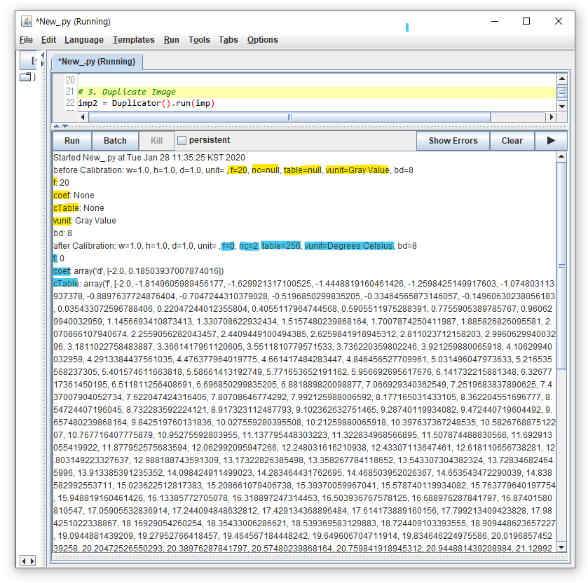
Density Calibration
function값이 20에서 0으로 변했습니다.
관련 공식 문서를 보시면 NONE에서 STRAIGHT_LINE으로 변경되었다는 의미라는 것을 알 수 있습니다.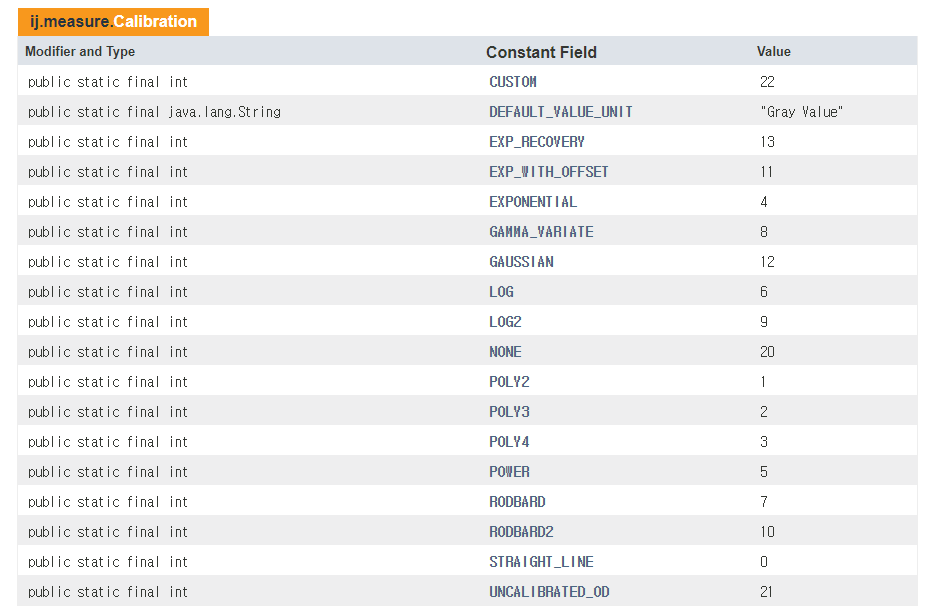
function의 coefficient를 의미하는coef는 None에서 array(‘d’, [-2.0, 0.18504…])가 되었습니다.
2.3.2의 y = a + bx 그래프에 도시된 계수가 바로 a = -2.0, b = 0.18504 입니다.cTable은 None에서 어마무시한 숫자의 나열이 되었습니다.
위에서 말씀드린 ‘ 0~255까지 256개의 값에 대응되는 value’ 입니다.
- 2.3.2의 Density Calibration 과정을